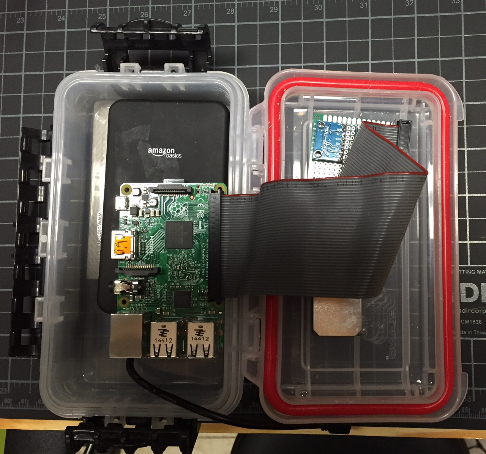

A powerful, inexpensive, and extensible tactical sailing computer
The goal of this project is to build a system which will meet or exceed the functionality of commercially available tactical sailing compass/gps units, with inexpensive, easy to acquire commodity hardware. A minimum configuration of the Mr. Gibbs unit and a Pebble
watch will cost less than $150 to build. The software is developed primarily in .Net and uses a simple plugin framework to allow easy extensibiliy and modification.
Design and goals
As a sailor, you are constantly bombarded with data. We feel and see the wind, feel the boat accelerate and heel, hear the sails luff, see the other boats and marks move around the course. We constantly try to combine as much input data as possible and distill objective answers to simple questions. Should I take the right side of the course or the left? The wind shifted a few degrees, but should I stay on this tack? The boat *feels* fast, but is it? Am I moving as well as I should for this wind?
With so much data, it feels like the last thing we need is one more blinking guage or number to pay attention to. Indeed, it is very easy to lose a race because you had your head "in the boat" playing with gadgets rather than paying attention to what's going on with the wind and your opponents. Perhaps more important than showing data constantly is knowing when to shut up, and when to say something important. With this in mind, the long term goal of the MrGibbs project is to collect as much data as it can, and have the system notify the crew when it has something genuinely important and useful.
Often on small boats, it can be hard to find a place to mount a guage/display where everybody can always see it. For this reason, using a display on your watch makes a lot of sense. The displays are always only as far away as your wrist, they can be customized per user, and the system can be controlled there as well. The pebble is inexpensive, durable, and visible in broad daylight. If you have a "sailing watch" now, there's a good chance the Pebble
costs less and does more.
So what does it do (now)?
The "2015" Model consisted of Mr. Gibbs and 2 pebble watches, one for skipper, one for crew. At startup it calibrates the accelerometer and gyro to the current orientation, acquires a gps fix and pairs with the 2 watches. Each watch displays a configurable "dashboard" which shows 3 metrics at a time. The default 3 metrics are speed, heading, and stopwatch. The users can start/stop/sync the watch (note that the watch runs on mr.gibbs, thus it is always "in sync" on the watches.
Users can optionally give Mr.Gibbs data about the course so that more sophisticated metrics and tactical data can be calculated. This can be done in one of several ways
- Sailing by a mark/line and using the current gps coordinates as the mark location
- Entering a compass bearing taken by sailing to the center of the course, and pointing the pebble watch at the windward mark
- Entering a compass bearing by manually entering the number on the pebble
- Taking a gps fix & compass bearing from 2 locations on the course, and then calculating the intersect
Lastly, users can customize which metrics display on their dashboards, by selecting from the following
- Speed
- VMG - Velocity made good - Speed calculated as if the boat were traveing straight from one mark to the next
- VMC - Velocity made good on course - Speed calculated as rate of closure from the boat to the next mark
- COG - Course over ground - Actual direction the boat is moving (not pointing)
- Heading (Magnetic) - Direction the boat is pointed
- Heading (True) - Direction the boat is pointed, corrected for declination
- Heel
- Top Speed
- Countdown
- Distance to Mark
- Pitch
- VMG % - The % of boatspeed that is along the course, eg 10 knots 45 degrees of course = 5 knots
- VMC % - The % of boatspeed that is toward the mark
- Current Tack Delta - The system remembers the heading at the start of the current tack. Current tack delta is the current heading subtracted from the heading at the start of the tack, so it will indicate if you have been lifted or headed since tacking.
- Course Relative - The current heading, subtracted from the angle of the course (aka how many degrees off the course are you)
Finally, all data is logged to a sqlite database and can be replayed and viewed in VisualSail
The Hardware
The current prototype consists of 3 major components...
 Mr. Gibbs himselfThe brains of the operation. This should be secured somewhere in the boat where it will have a clear view of the sky and a minimal amount of radio or magnetic interference (away from electrical components or engine) as they will affct the accuracy of the compass. This unit does not have any external display or buttons, display and control are both done entirely through the Pebble
.
- Raspberry Pi (A,B,B+, or 2)
(Zero should work too, but it hasn't been tested yet)
- Ublox NEO-6M
- MPU-6050
6 axis Accel/Gyro (support for MPU-9250 9-axis in development)
- HMC5883L
Magnetometer (Compass)
- Bluetooth 4.0 USB
- Portable Power Bank - 5,600 mAh
- Plano Guide Series 1449 Size Polycarbonate Field Box
- Circuit board, wiring etc
- Total Cost ~100
The Pebble
communicates with MrGibbs via bluetooth and provides a customizable dashboard of metrics as well as an extensive menu system of functionality. Watch countdowns as well as notifications will use the built in vibration function which is much harder to miss than a simple beep. The e-paper display of the pebble is perfect for sailing since it is always on, low power, and (unlike apple watch or android gear) viewable with polarized sunglasses. Any Pebble
model should work, but I prefer the original due to its low cost. Multiple watches can be used simultaneously and independently (skipper view, crew view etc).
The mast sensors which detect wind speed, direction, and tilt. This unit is battery powered and uses bluetooth low energy to communicate so there are no wires to run. It is primarily designed for training type use, as most fleets do not allow these type of sensors during races or regattas.
- Peet Bros Anemometer/Wind Vane
which utilizes weatherproof reed switches in place of the typical potentiometer
- Blend Micro
(an arduino and a bluetooth radio in an arduino micro form factor)
- MPU-6050
- Rechargable battery and Solar Panel
- Mount made from PVC
- Cost ~$150
Future (2016) Enhancements
During the offseason we have developed several new hardware components to be tested and refined for the 2016 season
The "Crows nest" Anemometer and wind vaneThe anemometer and vane will allow Mr. Gibbs to calculate relative wind speed and velocity, and from that there are a number of exciting possibilities. "True" speed and direction can theoretically be calculated by combining the wind vector with the boat vector. Using this it should be possible to make deductions about shifts and recommend tacks. Over time, the system will log boat speed relative to wind speed and direction and build polars, allowing metrics such as "% of nominal" speed etc. Lastly, we have attached a 6 axis accel/gyro as well to see if we can calculate mast bend relative to the boat.
KindleWe want to build a display we can mount centrally on the boat, which means some sort of radio to talk to Mr.Gibbs, some sort of controller, a battery, and a screen. E-paper is ideal since it is most visible in broad daylight. A refurbished kindle can be purchased for less than $60. With this in mind, the idea is to hack a kindle such that it can display dashboard/guages via a data feed from Mr.Gibbs.
Load CellsLonger term, one tool for measuring rig performance is load. A load cell can easily be wired to a blend micro and the data communicated to Mr. Gibbs.